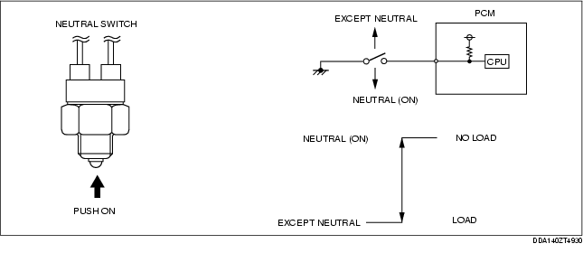

Neutral switch construction/operation [ZY] • When the shift lever is in the neutral position, the contact closes (ON) and the PCM detects a voltage of 1.0 V or less. When the shift lever is not in the neutral position, the contact opens (OFF) and the PCM detects a voltage of B+. 